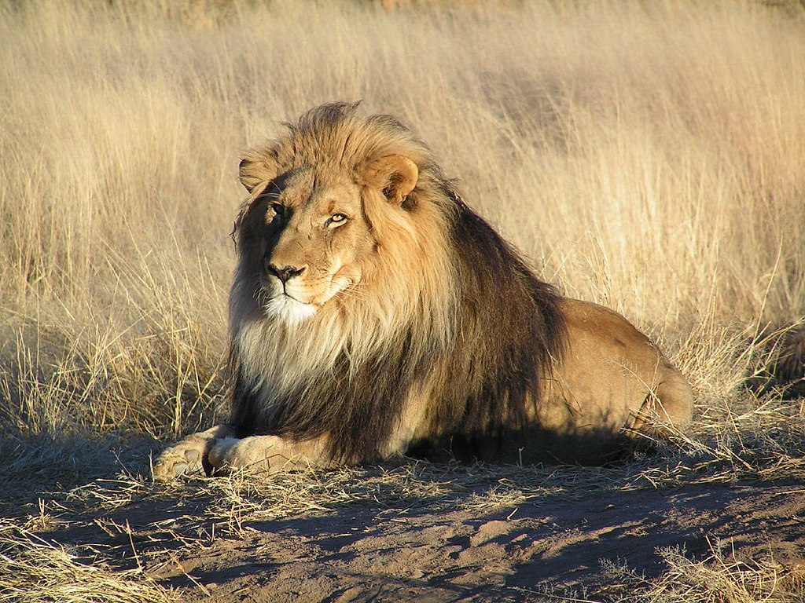
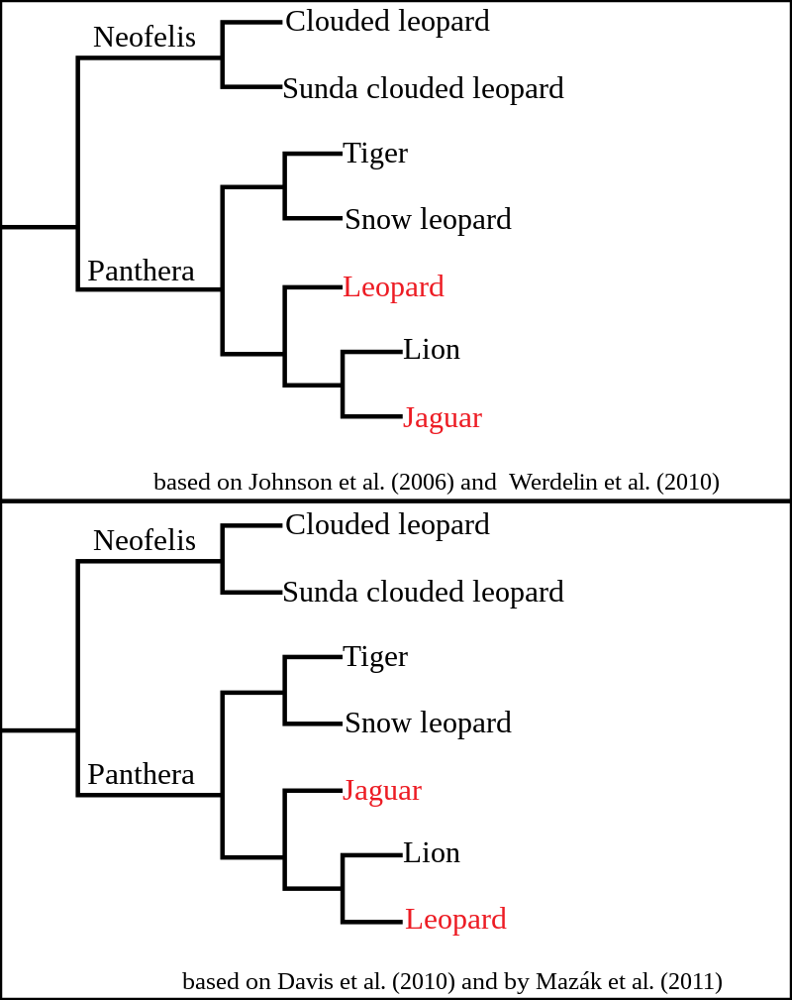
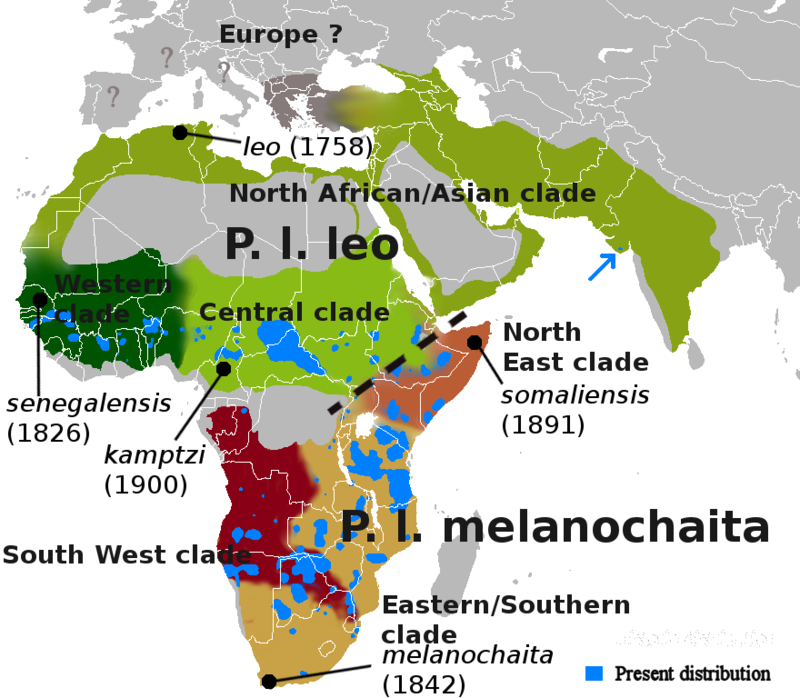
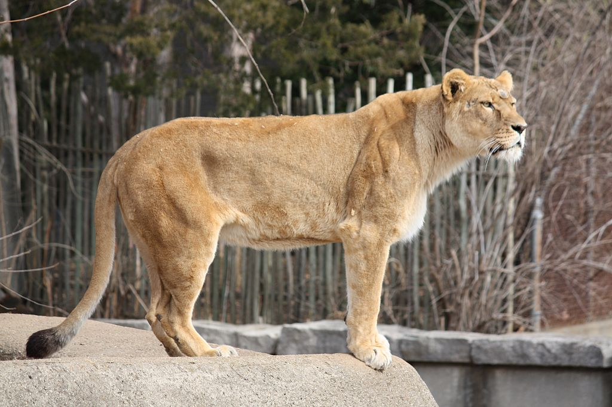
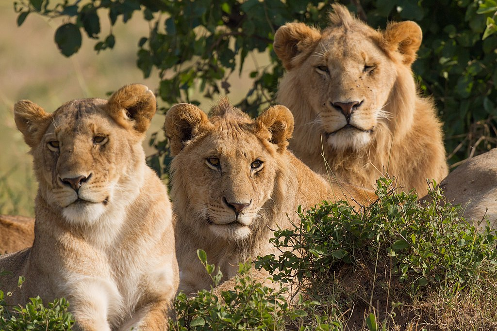
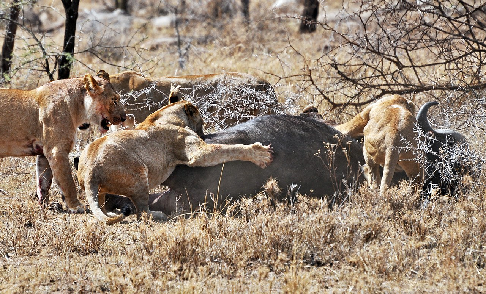
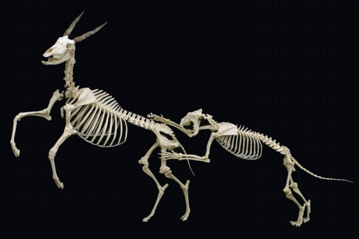

The lion (Panthera leo) is a large cat of the genus Panthera native to Africa and India. It has a muscular, broad-chested body; short, rounded head; round ears; and a hairy tuft at the end of its tail. It is sexually dimorphic; adult male lions are larger than females and have a prominent mane. It is a social species, forming groups called prides. A lion's pride consists of a few adult males, related females, and cubs. Groups of female lions usually hunt together, preying mostly on large ungulates. The lion is an apex and keystone predator; although some lions scavenge when opportunities occur and have been known to hunt humans, lions typically do not actively seek out and prey on humans.
The lion inhabits grasslands, savannas and shrublands. It is usually more diurnal than other wild cats, but when persecuted, it adapts to being active at night and at twilight. During the Neolithic period, the lion ranged throughout Africa and Eurasia from Southeast Europe to India, but it has been reduced to fragmented populations in sub-Saharan Africa and one population in western India. It has been listed as Vulnerable on the IUCN Red List since 1996 because populations in African countries have declined by about 43% since the early 1990s. Lion populations are untenable outside designated protected areas. Although the cause of the decline is not fully understood, habitat loss and conflicts with humans are the greatest causes for concern.
One of the most widely recognised animal symbols in human culture, the lion has been extensively depicted in sculptures and paintings, on national flags, and in contemporary films and literature. Lions have been kept in menageries since the time of the Roman Empire and have been a key species sought for exhibition in zoological gardens across the world since the late 18th century. Cultural depictions of lions were prominent in Ancient Egypt, and depictions have occurred in virtually all ancient and medieval cultures in the lion's historic and current range.
The English word lion is derived via Anglo-Norman liun from Latin leōnem (nominative: leō), which in turn was a borrowing from Ancient Greek λέων léōn. The Hebrew word לָבִיא lavi may also be related.[4] The generic name Panthera is traceable to the classical Latin word 'panthēra' and the ancient Greek word πάνθηρ 'panther'.
Felis leo was the scientific name used by Carl Linnaeus in 1758, who described the lion in his work Systema Naturae. The genus name Panthera was coined by Lorenz Oken in 1816. Between the mid-18th and mid-20th centuries, 26 lion specimens were described and proposed as subspecies, of which 11 were recognised as valid in 2005. They were distinguished mostly by the size and colour of their manes and skins.
In the 19th and 20th centuries, several lion type specimens were described and proposed as subspecies, with about a dozen recognised as valid taxa until 2017. Between 2008 and 2016, IUCN Red List assessors used only two subspecific names: P. l. leo for African lion populations, and P. l. persica for the Asiatic lion population. In 2017, the Cat Classification Task Force of the Cat Specialist Group revised lion taxonomy, and recognises two subspecies based on results of several phylogeographic studies on lion evolution, namely
However, there seems to be some degree of overlap between both groups in northern Central Africa. DNA analysis from a more recent study indicates, that Central African lions are derived from both northern and southern lions, as they cluster with P. leo leo in mtDNA-based phylogenies whereas their genomic DNA indicates a closer relationship with P. leo melanochaita.
Lion samples from some parts of the Ethiopian Highlands cluster genetically with those from Cameroon and Chad, while lions from other areas of Ethiopia cluster with samples from East Africa. Researchers therefore assume Ethiopia is a contact zone between the two subspecies.[18] Genome-wide data of a wild-born historical lion sample from Sudan showed that it clustered with P. l. leo in mtDNA-based phylogenies, but with a high affinity to P. l. melanochaita. This result suggested that the taxonomic position of lions in Central Africa may require revision
The Panthera lineage is estimated to have genetically diverged from the common ancestor of the Felidae around 9.32 to 4.47 million years ago to 11.75 to 0.97 million years ago, and the geographic origin of the genus is most likely northern Central Asia. Results of analyses differ in the phylogenetic relationship of the lion; it was thought to form a sister group with the jaguar (P. onca) that diverged 3.46 to 1.22 million years ago, but also with the leopard (P. pardus) that diverged 3.1 to 1.95 million years ago[8][9] to 4.32 to 0.02 million years ago. Hybridisation between lion and snow leopard (P. uncia) ancestors possibly continued until about 2.1 million years ago. The lion-leopard clade was distributed in the Asian and African Palearctic since at least the early Pliocene. The earliest fossils recognisable as lions were found at Olduvai Gorge in Tanzania and are estimated to be up to 2 million years
Estimates for the divergence time of the modern and cave lion lineages range from 529,000 to 392,000 years ago based on mutation rate per generation time of the modern lion. There is no evidence for gene flow between the two lineages, indicating that they did not share the same geographic area. The Eurasian and American cave lions became extinct at the end of the last glacial period without mitochondrial descendants on other continents. The modern lion was probably widely distributed in Africa during the Middle Pleistocene and started to diverge in sub-Saharan Africa during the Late Pleistocene. Lion populations in East and Southern Africa became separated from populations in West and North Africa when the equatorial rainforest expanded 183,500 to 81,800 years ago. They shared a common ancestor probably between 98,000 and 52,000 years ago. Due to the expansion of the Sahara between 83,100 and 26,600 years ago, lion populations in West and North Africa became separated. As the rainforest decreased and thus gave rise to more open habitats, lions moved from West to Central Africa. Lions from North Africa dispersed to southern Europe and Asia between 38,800 and 8,300 years ago.
Extinction of lions in southern Europe, North Africa and the Middle East interrupted gene flow between lion populations in Asia and Africa. Genetic evidence revealed numerous mutations in lion samples from East and Southern Africa, which indicates that this group has a longer evolutionary history than genetically less diverse lion samples from Asia and West and Central Africa. A whole genome-wide sequence of lion samples showed that samples from West Africa shared alleles with samples from Southern Africa, and samples from Central Africa shared alleles with samples from Asia. This phenomenon indicates that Central Africa was a melting pot of lion populations after they had become isolated, possibly migrating through corridors in the Nile Basin during the early Holocene.
In zoos, lions have been bred with tigers to create hybrids for the curiosity of visitors or for scientific purpose. The liger is bigger than a lion and a tiger, whereas most tigons are relatively small compared to their parents because of reciprocal gene effects. The leopon is a hybrid between a lion and leopard.
The lion is a muscular, broad-chested cat with a short, rounded head, a reduced neck and round ears. Its fur varies in colour from light buff to silvery grey, yellowish red and dark brown. The colours of the underparts are generally lighter. A new-born lion has dark spots, which fade as the cub reaches adulthood, although faint spots often may still be seen on the legs and underparts. The lion is the only member of the cat family that displays obvious sexual dimorphism. Males have broader heads and a prominent mane that grows downwards and backwards covering most of the head, neck, shoulders, and chest. The mane is typically brownish and tinged with yellow, rust and black hairs.
The tail of all lions ends in a dark, hairy tuft that in some lions conceals an approximately 5 mm (0.20 in)-long, hard "spine" or "spur" that is formed from the final, fused sections of tail bone. The functions of the spur are unknown. The tuft is absent at birth and develops at around 5+1⁄2 months of age. It is readily identifiable by the age of seven months.
Of the living felid species, the lion is rivaled only by the tiger in length, weight, and height at the shoulder. Its skull is very similar to that of the tiger, although the frontal region is usually more depressed and flattened, and has a slightly shorter postorbital region and broader nasal openings than those of the tiger. Due to the amount of skull variation in the two species, usually only the structure of the lower jaw can be used as a reliable indicator of species.
Skeletal muscles of the lion make up 58.8% of its body weight and represents the highest percentage of muscles among mammals.
The male lion's mane is the most recognisable feature of the species. It may have evolved around 320,000–190,000 years ago It starts growing when lions are about a year old. Mane colour varies and darkens with age; research shows its colour and size are influenced by environmental factors such as average ambient temperature. Mane length apparently signals fighting success in male–male relationships; darker-maned individuals may have longer reproductive lives and higher offspring survival, although they suffer in the hottest months of the year. The presence, absence, colour and size of the mane are associated with genetic precondition, sexual maturity, climate and testosterone production; the rule of thumb is that a darker, fuller mane indicates a healthier animal. In Serengeti National Park, female lions favour males with dense, dark manes as mates. Cool ambient temperature in European and North American zoos may result in a heavier mane Asiatic lions usually have sparser manes than average African lions.
Almost all male lions in Pendjari National Park are either maneless or have very short manes. Maneless lions have also been reported in Senegal, in Sudan's Dinder National Park and in Tsavo East National Park, Kenya. The original male white lion from Timbavati in South Africa was also maneless. The hormone testosterone has been linked to mane growth; castrated lions often have little to no mane because the removal of the gonads inhibits testosterone production.[66] Increased testosterone may be the cause of maned lionesses reported in northern Botswana.
Further information: White lion
The white lion is a rare morph with a genetic condition called leucism which is caused by a double recessive allele. It is not albino; it has normal pigmentation in the eyes and skin. White lions have occasionally been encountered in and around Kruger National Park and the adjacent Timbavati Private Game Reserve in eastern South Africa. They were removed from the wild in the 1970s, thus decreasing the white lion gene pool. Nevertheless, 17 births have been recorded in five prides between 2007 and 2015. White lions are selected for breeding in captivity. They have reportedly been bred in camps in South Africa for use as trophies to be killed during canned hunts.
African lions live in scattered populations across sub-Saharan Africa. The lion prefers grassy plains and savannahs, scrub bordering rivers and open woodlands with bushes. It rarely enters closed forests. On Mount Elgon, the lion has been recorded up to an elevation of 3,600 m (11,800 ft) and close to the snow line on Mount Kenya.[45] Savannahs with an annual rainfall of 300 to 1,500 mm (12 to 59 in) make up the majority of lion habitat in Africa, estimated at 3,390,821 km2 (1,309,203 sq mi) at most, but remnant populations are also present in tropical moist forests in West Africa and montane forests in East Africa. The Asiatic lion now survives only in and around Gir National Park in Gujarat, western India. Its habitat is a mixture of dry savannah forest and very dry, deciduous scrub forest.
In Africa, the range of the lion originally spanned most of the central African rainforest zone and the Sahara desert. In the 1960s, it became extinct in North Africa, except in the southern part of Sudan.
In southern Europe and Asia, the lion once ranged in regions where climatic conditions supported an abundance of prey. In Greece, it was common as reported by Herodotus in 480 BC; it was considered rare by 300 BC and extirpated by AD 100. It was present in the Caucasus until the 10th century. It lived in Palestine until the Middle Ages, and in Southwest Asia until the late 19th century. By the late 19th century, it had been extirpated in most of Turkey. The last live lion in Iran was sighted in 1942 about 65 km (40 mi) northwest of Dezful, although the corpse of a lioness was found on the banks of the Karun river in Khūzestān Province in 1944. It once ranged from Sind and Punjab in Pakistan to Bengal and the Narmada River in central India.
Lions spend much of their time resting; they are inactive for about twenty hours per day.[80] Although lions can be active at any time, their activity generally peaks after dusk with a period of socialising, grooming and defecating. Intermittent bursts of activity continue until dawn, when hunting most often takes place. They spend an average of two hours a day walking and fifty minutes eating.
The lion is the most social of all wild felid species, living in groups of related individuals with their offspring. Such a group is called a "pride". Groups of male lions are called "coalitions". Females form the stable social unit in a pride and do not tolerate outside females. Membership changes only with the births and deaths of lionesses, although some females leave and become nomadic. The average pride consists of around 15 lions, including several adult females and up to four males and their cubs of both sexes. Large prides, consisting of up to 30 individuals, have been observed. The sole exception to this pattern is the Tsavo lion pride that always has just one adult male. Male cubs are excluded from their maternal pride when they reach maturity at around two or three years of age.
Some lions are "nomads" that range widely and move around sporadically, either in pairs or alone. Pairs are more frequent among related males who have been excluded from their birth pride. A lion may switch lifestyles; nomads can become residents and vice versa. Interactions between prides and nomads tend to be hostile, although pride females in estrus allow nomadic males to approach them. Males spend years in a nomadic phase before gaining residence in a pride. A study undertaken in the Serengeti National Park revealed that nomadic coalitions gain residency at between 3.5 and 7.3 years of age. In Kruger National Park, dispersing male lions move more than 25 km (16 mi) away from their natal pride in search of their own territory. Female lions stay closer to their natal pride. Therefore, female lions in an area are more closely related to each other than male lions in the same area.
The area occupied by a pride is called a "pride area" whereas that occupied by a nomad is a "range". Males associated with a pride tend to stay on the fringes, patrolling their territory. The reasons for the development of sociality in lionesses—the most pronounced in any cat species—are the subject of much debate. Increased hunting success appears to be an obvious reason, but this is uncertain upon examination; coordinated hunting allows for more successful predation but also ensures non-hunting members reduce per capita calorific intake. Some females, however, take a role raising cubs that may be left alone for extended periods. Members of the pride tend to regularly play the same role in hunts and hone their skills. The health of the hunters is the primary need for the survival of the pride; hunters are the first to consume the prey at the site it is taken. Other benefits include possible kin selection, sharing food within the family, protecting the young, maintaining territory, and individual insurance against injury and hunger.
Both males and females defend the pride against intruders, but the male lion is better-suited for this purpose due to its stockier, more powerful build. Some individuals consistently lead the defence against intruders, while others lag behind. Lions tend to assume specific roles in the pride; slower-moving individuals may provide other valuable services to the group.[94] Alternatively, there may be rewards associated with being a leader that fends off intruders; the rank of lionesses in the pride is reflected in these responses. The male or males associated with the pride must defend their relationship with the pride from outside males who may attempt to usurp them.
Asiatic lion prides differ in group composition. Male Asiatic lions are solitary or associate with up to three males, forming a loose pride while females associate with up to 12 other females, forming a stronger pride together with their cubs. Female and male lions associate only when mating. Coalitions of males hold territory for a longer time than single lions. Males in coalitions of three or four individuals exhibit a pronounced hierarchy, in which one male dominates the others and mates more frequently.
The lion is a generalist hypercarnivore and is considered to be both an apex and keystone predator due to its wide prey spectrum. Its prey consists mainly of ungulates weighing 190–550 kg (420–1,210 lb), particularly blue wildebeest, plains zebra, African buffalo, gemsbok and giraffe. They also hunt common warthog depending on availability, despite weighing less than the preferred weight range. In India, chital and sambar deer are the most common wild prey, while livestock contributes significantly to lion kills outside protected areas. They usually avoid fully grown adult elephants, rhinoceroses and hippopotamus and small prey like dik-dik, hyraxes, hares and monkeys.[100][103] Unusual prey include porcupines and small reptiles. Lions kill other predators but seldom consume them.
Young lions first display stalking behaviour at around three months of age, although they do not participate in hunting until they are almost a year old and begin to hunt effectively when nearing the age of two. Single lions are capable of bringing down zebra and wildebeest, while larger prey like buffalo and giraffe are riskier. In Chobe National Park, large prides have been observed hunting African bush elephants up to around 15 years old in exceptional cases, with the victims being calves, juveniles, and even subadults. In typical hunts, each lioness has a favoured position in the group, either stalking prey on the "wing", then attacking, or moving a smaller distance in the centre of the group and capturing prey fleeing from other lionesses. Males attached to prides do not usually participate in group hunting.[108] Some evidence suggests, however, that males are just as successful as females; they are typically solo hunters who ambush prey in small bushland.
Lions are not particularly known for their stamina. For instance, a lioness's heart comprises only 0.57% of her body weight and a male's is about 0.45% of his body weight, whereas a hyena's heart comprises almost 1% of its body weight. Thus, lions run quickly only in short bursts at about 48–59 km/h (30–37 mph) and need to be close to their prey before starting the attack. One study in 2018 recorded a lion running at a top speed of 74.1 km/h (46.0 mph). They take advantage of factors that reduce visibility; many kills take place near some form of cover or at night. The lion's attack is short and powerful; they attempt to catch prey with a fast rush and final leap. They usually pull it down by the rump and kill by a strangling bite to the throat. They also kill prey by enclosing its muzzle in their jaws. Male lions usually aim for the backs or hindquarters of rivals, rather than their necks.
Lions typically consume prey at the location of the hunt but sometimes drag large prey into cover. They tend to squabble over kills, particularly the males. Cubs suffer most when food is scarce but otherwise all pride members eat their fill, including old and crippled lions, which can live on leftovers. Large kills are shared more widely among pride members.[118] An adult lioness requires an average of about 5 kg (11 lb) of meat per day while males require about 7 kg (15 lb). Lions gorge themselves and eat up to 30 kg (66 lb) in one session.[78] If it is unable to consume all of the kill, it rests for a few hours before continuing to eat. On hot days, the pride retreats to shade with one or two males standing guard. Lions defend their kills from scavengers such as vultures and hyenas.
Lions scavenge on carrion when the opportunity arises, scavenging animals dead from natural causes such as disease or those that were killed by other predators. Scavenging lions keep a constant lookout for circling vultures, which indicate the death or distress of an animal. Most carrion on which both hyenas and lions feed upon are killed by hyenas rather than lions. Carrion is thought to provide a large part of lion diet.
